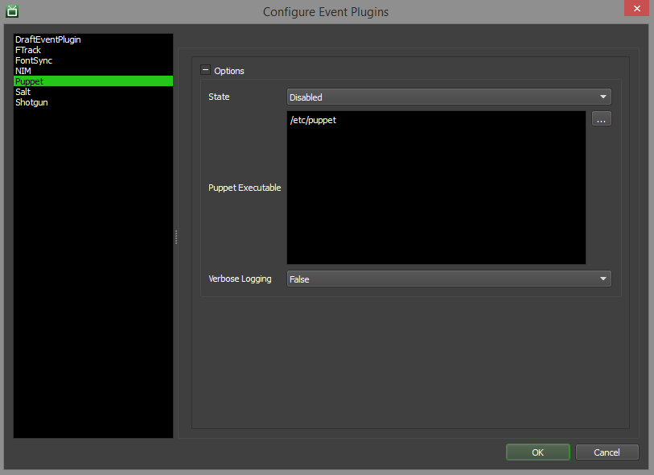

Puppet¶
Overview¶
Puppet is a management system that can be used to keep applications and plugins synched across your render nodes. See the Puppet Labs Website for more information.
The Puppet event plugin that ships with Deadline can be used to run a Puppet update on a Worker when it starts and when it becomes idle, thus allowing you to keep your render nodes in sync without interrupting jobs that are currently rendering.
Note that Puppet must already be configured to work outside of Deadline. Once your Puppet system is set up, you can then enable the Puppet event plugin for Deadline to automatically trigger Puppet updates.
Setup¶
Some configuration is needed to use the Puppet event plugin. To access these settings, simply enter Power User mode and select Tools -> Configure Events form the Monitor’s menu. From there, select the Puppet entry from the list on the left.
The Puppet event plugin settings are:
Options
State: There are three different states that an Event Plugin can be in: Global Enabled, Opt-In, and Disabled. In order for this feature to function properly, the State must be set to either Global Enabled or Opt-In. Note that if this plugin is in the Opt-In state, the jobs that want to run this plugin must opt into Puppet.
Puppet Path: The path to the Puppet executable file. Enter alternative paths on separate lines.
Verbose: If enabled, the puppet update will have verbose logging enabled.
Error Messages and Meanings¶
This is a collection of known Puppet error messages and their meanings, as well as possible solutions. We want to keep this list as up to date as possible, so if you run into an error message that isn’t listed here, please contact Deadline Support and let us know.
Currently, no error messages have been reported for this event plugin.

{kind=link}